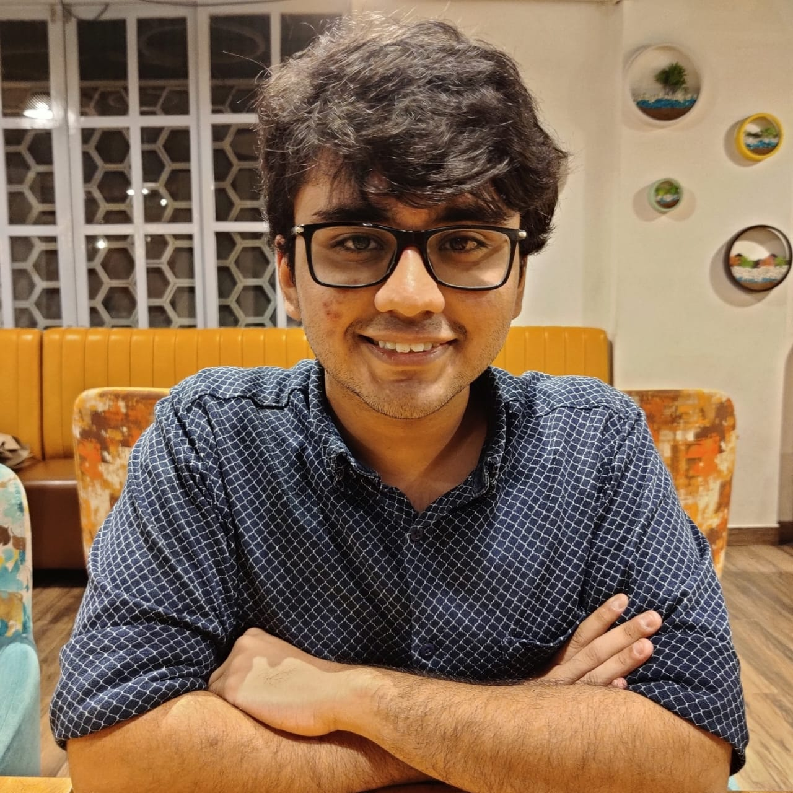

I am a third-year undergraduate student majoring in Mathematics and Computer Science at Chennai Mathematical Institute, India.
My research interests are in theoretical computer science with particular focus on cryptography and complexity theory. I am broadly interested in all aspects of cryptography, and have previously worked on proof systems and secure multi-party computation. My interests in complexity theory lie mainly in probabilistic proofs, pseudorandomness, coding theory and circuit complexity. Recently I have also become interested in applications of cryptography to privacy-preserving technologies and blockchain.
Formerly I was a math olympiad participant, and maintain an interest in combinatorics and other discrete math.
Advisor: Chaya Ganesh, Indian Institute of Science
From Jan 2022 - November 2022, I worked with Prof. Chaya on the relationships between low-communication Byzantine Agreement and succinct arguments. Our major result was showing that the SRDS primitive of Boyle et al. implies worst-case SNARGs for subset-product. We also attempted to find a better construction for SRDS, and I learned about PCD, polynomial commitments and recent impossibility results related to succinct arguments.
The result was presented in a symposium at the end of the Narendra Summer Internship program at IISc. Presently we are working on succinct arguments and witness encryption.
Advisor: Akshayaram Srinivasan, Tata Institute of Fundamental Research
From March 2022 onwards, I have worked with Prof. Akshay on secret sharing and multi-party computation. My work has focused on distributed point functions and applications of function secret sharing, along with OT extension and maliciously secure protocol compilers. In collaboration with Microsoft Research, I applied these ideas to Private Information Retrieval.
Currently we are preparing our results for publication, and I am working on learning more about secure computation and PIR.
Advisor: Azadeh Farzan, University of Toronto
From July 2022 - August 2022, I worked with Prof. Azadeh and three other students on trace theory as part of the Fields Undergraduate Summer Research Program. Our work mainly generalized trace monoids to allow for independence relations that involved commuting strings instead of symbols. We were able to prove several properties of generalized monoids including conditions under which the regularity of the languages \(\mathcal{L}_{a \prec b} = \{ awb \mid a \prec_{awb} b \}\) and \(Lex(\Sigma^*) = \{ u \mid v \equiv u \Rightarrow v \leq u \}\) was preserved. We also showed several algebraic properties of the languages.
Our results were delivered in a presentation at the Fields Institute.
| [1] |
Real Analysis (Analysis I)
|
|---|
| [2] |
Linear Algebra (Algebra I)
|
|---|
| [3] |
Classical Mechanics I
|
|---|
| [4] |
Introduction to Programming with Haskell
|
|---|
| [5] |
English
|
|---|
| [6] |
Multivariable Calculus (Analysis II)
|
|---|
| [7] |
Group Theory (Algebra II)
|
|---|
| [8] |
Discrete Mathematics
|
|---|
| [9] |
Introduction to Probability
|
|---|
| [10] |
Advanced Programming
|
|---|
| [11] |
Metric Spaces and Functional Analysis (Analysis III)
|
|---|
| [12] |
Ring and Field Theory (Algebra III)
|
|---|
| [13] |
Theory of Computation
|
|---|
| [14] |
Design and Analysis of Algorithms
|
|---|
| [15] |
Calculus
|
|---|
| [16] |
Complex Analysis
|
|---|
| [17] |
Complexity Theory
|
|---|
| [18] |
Programming Language Concepts
|
|---|
| [19] |
Topology
|
|---|
| [20] |
Differential Equations
|
|---|
| [21] |
Topics in Complexity Theory (Complexity II)
|
|---|
| [22] |
Communication Complexity
|
|---|
| [23] |
Matching and Flow Algorithms
|
|---|
| [24] |
Timed Automata
|
|---|
Bold indicates graduate courses.
Cryptography Engineering Intern, December 2022 - Present
My primary work involves implementation of in-house SNARKs for inter-blockchain communication.
Julia Summer of Code Contributor, July 2022 - Sept 2022
I worked on improving the timeseries package TSFrames.jl by adding features like broadcasting, aggregation, support for more DateTime formats, etc. The process also involved benchmarking, documentation and testing. I also worked on designing and prototyping EventStudies.jl, a package that will be used for performing event studies analysis of financial and supply-chain data.
The work was done mostly in Julia. A demo of TimeFrames was presented at JuliaCon 2022. It has been used on financial datasets and to track night-time satellite data.
Intern, March 2022 - June 2022
I designed and created the TSFrames.jl package from scratch to replace Julia's outdated TimeSeries.jl package. I worked closely with a development team dedicated to revitalizing Julia Stats, and Viral Shah, the founder of Julia. The work involved completely writing a whole package based on R's xts and to complete with Python PANDAS.
TSFRmaes benchmarks an over 150% improvement in runtime over TimeSeries.jl and has several features that are not present in the other TimeSeries.jl package. It has much higher support and far greater flexibility with the underlying dataframe structure being accessible for user manipulation.
You can find some notes I've written here. None of these are CMI courses -- CMI homeworks are usually less frequent and quite long.